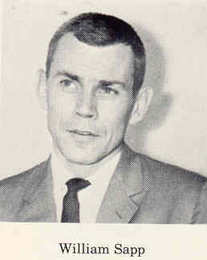
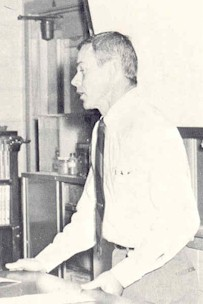
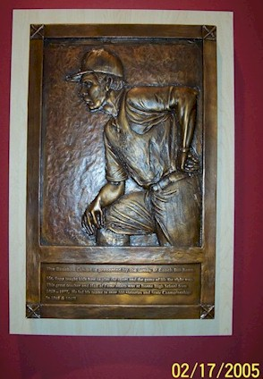
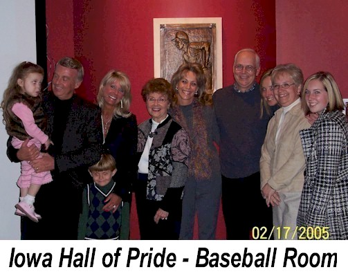
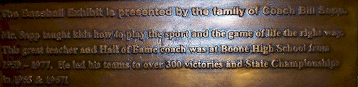

|  1967 |
 1967 |
|  Iowa Hall of Pride - Des Moines |
 Iowa Hall of Pride - Des Moines |
|  The Baseball Exhibit is presented by the family of Coach Bill Sapp. Mr. Sapp taught kids how to play the sport and the game of life the right way. This great teacher and Hall of Fame Coach was at Boone High School from 1959 to 1977. He led his teams to over 300 victories and Iowa State Championships in 1965 and 1967. |